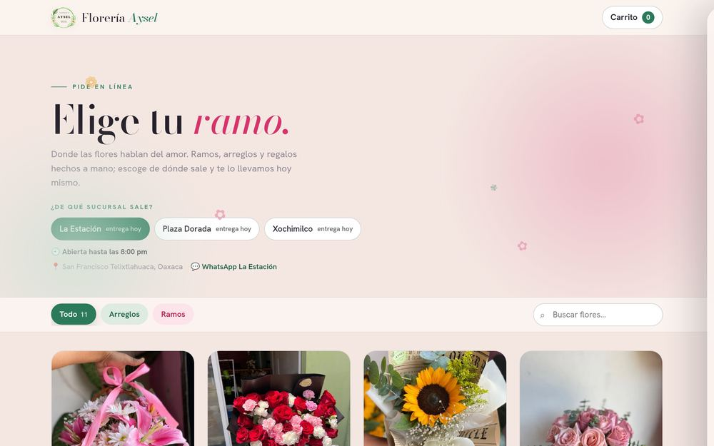
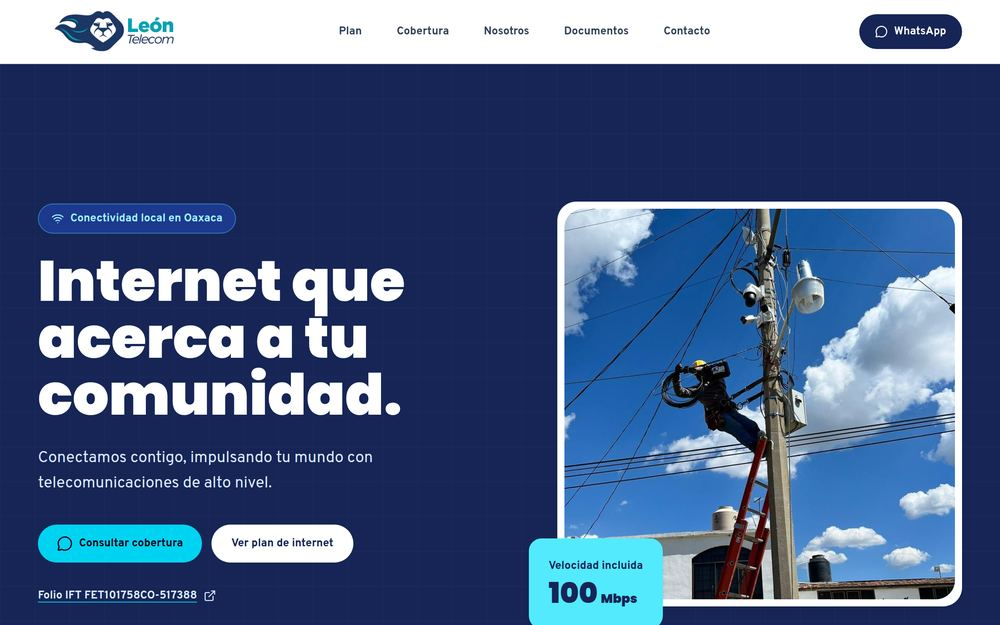
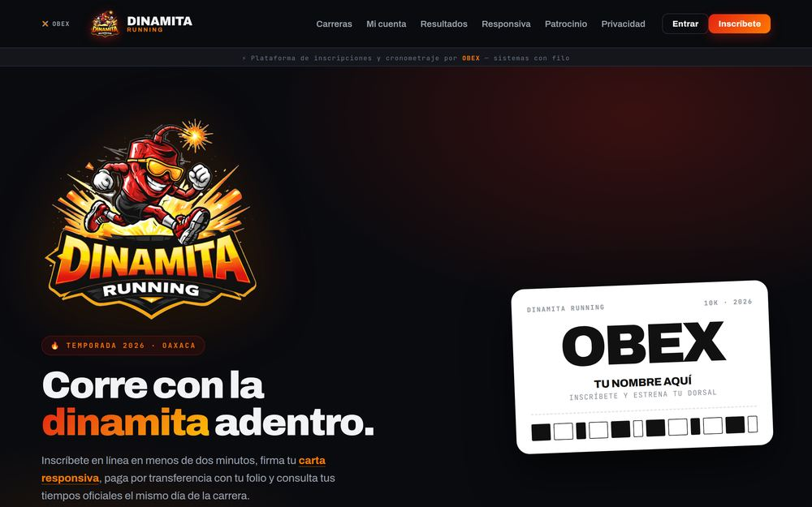
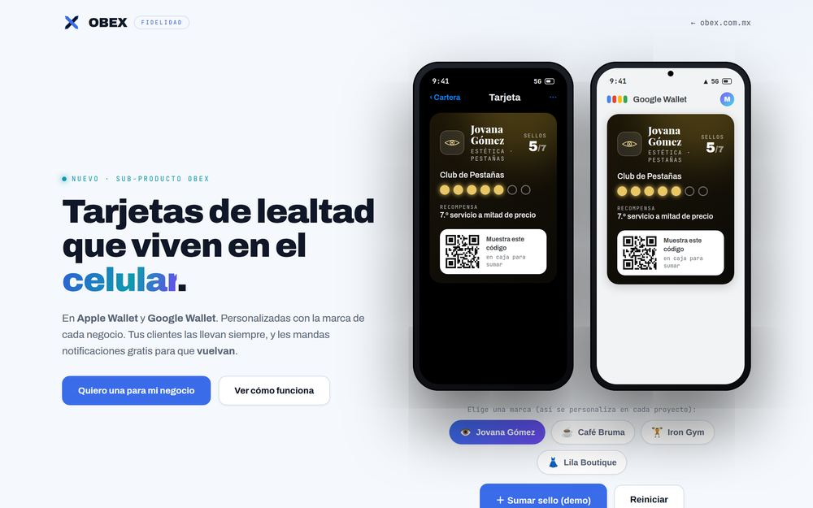

Construyo sistemas que un negocio usa todos los días.
Desarrollador y líder de proyectos, de Oaxaca. No solo escribo el código: me siento con el dueño, acuerdo qué se va a hacer, lo construyo, lo pongo en línea y respondo por él cuando ya está trabajando. Todo lo que está aquí abajo está funcionando, con clientes de verdad usándolo hoy.
5sistemas construidos, tres con clientes usándolos hoy
1,090clientes atendidos por un bot que hice
3negocios cobrando en línea con mi código
534pruebas automáticas solo en el sistema de la florería
Lo que he construido
Cada uno resuelve un problema que le costaba dinero o tiempo a alguien.
Florería Aysel · el sistema completo
En producción
Una florería con tres sucursales que vendía solo por mensajes sueltos. Hoy tiene tienda en línea, cobro con tarjeta que deposita directo en su banco, un panel donde ven los pedidos del día y un asistente de WhatsApp que toma pedidos solo, a cualquier hora.
Vende sola, también de madrugadaAntes cada pedido era una conversación de WhatsApp que alguien tenía que anotar a mano. Hoy el cliente escoge, paga y deja su dirección sin que nadie conteste, en las tres sucursales, y la dueña abre el panel y ve qué armar.

floreriaaysel.com.mx, funcionando hoy
Tienda con catálogo por sucursal, existencias, ediciones de temporada y entrega a domicilio con pin de mapa.
Cobro en línea con Stripe Connect: el dinero llega a la cuenta de la florería, no a la mía.
Asistente en la API oficial de WhatsApp: fotos de los ramos, botones, listas, recordatorio de pago y avisos de cómo va el pedido.
Panel con lo que la dueña necesita a las siete de la mañana: qué sale hoy, qué falta armar, qué no se ha pagado.
Un proveedor de internet que perseguía más de mil pagos al mes a mano. Ahora el bot avisa del corte, manda el enlace de pago y reactiva el servicio en cuanto el cliente paga.
1,090 clientes avisados en un solo envíoEl aviso de corte que antes se mandaba cliente por cliente hoy sale de una vez, y el que paga se reconecta solo, sin que nadie en la oficina toque un botón.

leontelecom.com.mx, el sitio que también les rehice
Avisos y recordatorios de pago, con todo dentro de la conversación de WhatsApp.
Reactivación automática contra la API del proveedor de red, en cuanto el pago entra.
Panel con usuarios y permisos por casilla para el equipo de la oficina.
Node.jsWhatsAppAPI de tercerosCobros
Dinamita Running · inscripciones a carreras
En producción
Inscripciones en línea para carreras, con el cobro entrando directo a la cuenta del organizador y el corte de caja calculándose solo.
El corredor se inscribe sin ir a ningún ladoEscoge su categoría, firma la carta responsiva y paga desde el teléfono. El dinero cae directo en la cuenta del organizador y el corte de caja se calcula solo.

dinamitarunning.com.mx, funcionando hoy
Registro de corredores, categorías y pago con tarjeta.
Carta responsiva firmada desde el teléfono, sin imprimir nada.
Pantalla para inscribir en la puerta el día del evento.
La tarjeta de sellos del changarro, hecha bien: el cliente ve sus puntos y sus premios desde el navegador del teléfono, sin instalar nada, y puede guardar su tarjeta en Apple Wallet o Google Wallet. Un solo sistema atiende a muchos negocios a la vez, cada uno con su marca, sus sucursales y sus reglas.
Un sello no se pierde ni se regala dos vecesCada movimiento queda asentado y se puede reconstruir desde cero. Si al cajero se le va la señal y reintenta, no se duplica el premio; si dos terminales canjean lo mismo en el mismo segundo, no queda saldo en negativo; y la misma foto de ticket no acumula dos veces.

obex.com.mx/fidelidad, se puede probar ahora
Puntos, sellos y premios, con las reglas que cada negocio quiera, sin tocar el código.
Pases firmados para Apple Wallet y Google Wallet, con la marca del negocio; en Google las notificaciones son gratis y en Apple el permiso se paga aparte.
El dinero se maneja en centavos enteros y el teléfono se guarda en un solo formato, para que un cliente no se vuelva dos.
Lo que uno acaba construyendo cuando ya tiene varios sistemas vivos y nadie más los va a cuidar.
Una de ellas encontró una tienda caída que las pruebas normales no veíanLa tienda respondía bien a todo lo que se le preguntaba, pero la página se quedaba en blanco para el cliente. La prueba que abre un navegador de verdad lo vio en un minuto.
Pruebas que abren la página en un navegador real, miden si algo se sale de la pantalla y fallan si no pinta.
Un puente para pasar archivos del celular a la computadora acercándolos, sin cables ni nube.
Un catálogo donde el cliente palomea lo que quiere vender y yo recibo la lista lista para cargar.
AutomatizaciónPruebas en navegadorLinuxsystemd
Quién soy
Soy Manuel, de Oaxaca, y estudio Ingeniería en Computación. Lo que sé de verdad no lo aprendí en un salón: lo aprendí poniendo sistemas en manos de gente que los necesita para trabajar, y quedándome a arreglarlos cuando algo falla un martes a las siete de la mañana.
Trabajo bajo mi propia marca, OBEX, y ahí soy quien lleva el proyecto: el que lo acuerda con el cliente, el que decide cómo se va a hacer, el que reparte el trabajo y el que da la cara cuando hay que entregar. Un negocio me cuenta cómo trabaja hoy, y yo le entrego algo que lo hace solo.
Autodidacta
Casi todo lo que uso lo aprendí solo, contra un problema real que tenía que quedar funcionando.
Llevo el proyecto, no solo el código
Acuerdo el alcance, pongo fechas, decido cómo se arma y voy avisando cómo va. El cliente trata con una sola persona.
Le entro a todo el sistema
De la pantalla que ve el cliente a la base de datos, el cobro y el servidor donde vive.
Cuido lo que entrego
Los sistemas que hago traen pruebas automáticas: si algo se rompe, me entero yo antes que el cliente.
Cómo llevo un proyecto
El cliente trata con una sola persona de principio a fin. Esa persona soy yo.
Nos sentamos y lo acordamos
Primero entiendo cómo trabajan hoy: quién hace qué, dónde se les va el tiempo y qué les cuesta dinero. De ahí sale qué se va a hacer, qué no, y para cuándo.
Lo construyo y lo voy enseñando
No desaparezco un mes. Voy entregando pedazos que ya se pueden tocar, y el dueño va diciendo si así lo quería antes de que sea tarde para cambiarlo.
Lo entrego funcionando
Queda en línea, con su dominio, su cobro conectado a la cuenta del negocio y la gente del mostrador sabiendo usarlo. No entrego archivos, entrego algo que ya está trabajando.
Me quedo respondiendo
Si algo se rompe un domingo, me escriben a mí, no a un soporte que nunca contesta. Y casi siempre ya lo estoy arreglando antes de que escriban.
Con qué trabajo
Lo de la primera columna es con lo que trabajo a diario, y con eso hay sistemas míos funcionando ahora mismo.
Todos los días
JavaScript (Node.js y navegador)
Express y APIs propias
MongoDB
HTML y CSS a mano
Git
Cobros e integraciones
Stripe y Stripe Connect
Webhooks firmados
WhatsApp Cloud API (Meta)
Cloudinary
APIs de terceros
Poner cosas en línea
Render y dominios propios
Linux y línea de comandos
Aplicaciones instalables (PWA)
Pruebas automatizadas
También he programado en
Java
C y C#
Kotlin
MySQL
¿Tienes un negocio que todavía trabaja a mano?
Eso es justo lo que hago: tomar lo que hoy se resuelve con libretas, mensajes sueltos y llamadas, y dejarlo funcionando solo.